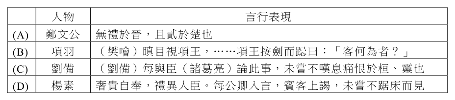
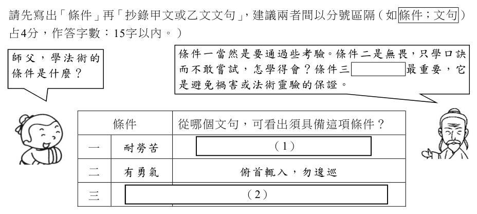

開卷有益 ／
學科能力測驗 ／ 國綜 ／ 111 年111 年學科能力測驗國綜試題與答案
這一頁是民國 111 年學科能力測驗國綜的整份歷屆試題，共 37 題，題目與標準答案出自大考中心 學測歷年試題（依著作權法 §9，考試試題不受著作權保護），其中 37 題附有詳解。以下逐題列出題幹、選項與答案；要計時作答或記錄成績，請用線上練習。
線上作答這一科 →
全部 37 題
第 1 題
下列「」內的字，讀音前後相同的是：
（A） 既瘖且「痺」／彈箏搏「髀」（B） 不「忮」不求／「庋」藏字畫（C） 「攢」蹙累積／踰牆「鑽」穴（D） 「剜」肉補瘡／壯士斷「腕」答案：（A）
詳解與考點 正解：題幹問「讀音前後相同」，必須連聲母、韻母與聲調一併核對。A 的「痺」與「髀」皆讀 ㄅㄧˋ，前後完全同音，故 A 為正解。
B：「忮」讀 ㄓˋ，「庋」讀 ㄍㄨㄟˇ，聲母、韻母皆不同，B 錯誤。
C：「攢」讀 ㄘㄨㄢˊ，「鑽」讀 ㄗㄨㄢ，聲母與聲調不同，C 錯誤。
D：「剜」讀 ㄨㄢ，為第一聲；「腕」讀 ㄨㄢˋ，為第四聲。二字雖韻母相同，聲調不同即非完全同音，D 錯誤。它看起來對，是因為兩字同為 ㄨㄢ 韻，容易忽略聲調也是讀音的一部分。
本題考點：國字讀音辨析——判斷同音須同時核對聲母、韻母與聲調，三者缺一不同即不可判為同音；多音節辨析操作——先標出各字注音，再逐項比對。
第 2 題
下列文句，完全沒有錯別字的是：
（A） 觀音山，故名思義是因遠眺貌似觀音躺臥而得名（B） 清晨的山谷中，不見遊客聚集，萬物靜寂，闃然無聲（C） 年終特賣會，在買一送一的強力促銷下，驅之若鶩者多（D） 有些人誤以為投資一本萬利，因而錯判形勢，終至傾家盪產答案：（B）
詳解與考點 正解：題幹要求「完全沒有錯別字」，須逐一核對詞語本義與慣用寫法。B 的「闃然無聲」形容寂靜無聲，「闃」字用法正確，故 B 為正解。
A：「故名思義」應作「顧名思義」，意為看到名稱即可推知含義；「故」字誤植。
C：「驅之若鶩」應作「趨之若鶩」；「趨」是快步前往，「驅」雖形近卻不合成語本義。它看起來對，是因為兩字字形相近。
D：「傾家盪產」應作「傾家蕩產」；「蕩」才有耗盡、失去之義。
本題考點：錯別字辨析——先以詞語本義核對慣用字形；遇到形近字時，回到字義判斷是否能與語境相合。
第 3 題
下列文句畫底線處的詞語，運用不適當的是：
（A） 世事變化無常，有如白駒過隙，總讓人感觸良多（B） 一味索求而不節制，無疑是竭澤而漁，自斷後路（C） 依循既往，墨守成規，很難在文創產業頭角崢嶸（D） 他們陷入進退維谷的狀態，心慌意亂，難以抉擇答案：（A）
詳解與考點 正解：題幹要求找詞語運用不適當者，應先核對成語本義與句子所要表達的內容。A：白駒過隙比喻時光飛逝，不是形容世事變化無常；此處把時間流逝誤用為世事變遷，故不適當。
B：竭澤而漁形容過度索取、不顧後果，與「一味索求而不節制，自斷後路」相符。
C：頭角崢嶸形容才能出眾，以「在文創產業頭角崢嶸」表現脫穎而出，運用適當。
D：進退維谷形容進退兩難，與心慌意亂、難以抉擇的處境相符。
本題考點：成語本義辨析——先以核心義核對語境；白駒過隙＝時光飛逝，進退維谷＝進退兩難，不能只依字面聯想。
第 4 題
依據下列框內資訊，關於斯卡羅族的敘述，最適當的是：斯卡羅族居住於海拔三百公尺以下，在清代已接觸較多漢人文化；在臺灣接受日本統治後，即以和平、合作的態度迅速成立國語傳習所。同化的程度越深，自我的認知越淡，族群離散也越快。據大正六年調查，斯卡羅族豬朥束社僅八十九戶，連同射麻里社十九戶、龍鑾社二十一戶、貓仔社十多戶，即使加上已移住他鄉的族人，也不過二一〇戶，約一千人。到了昭和五年至七年臺北帝國大學調查時，只剩五百人左右。學者㇠ 學者甲
（A） 漢人文化對傳統習俗造成強烈衝擊，導致族人避居外地（B） 低海拔地區的生活條件不良，使族人的向心力日益淡薄（C） 族人響應日人政策設校學日語，間接導致族群日趨式微（D） 大正六年，已有逾半戶數移住他鄉，且多遷居豬朥束社答案：（C）
詳解與考點 正解：題幹指出斯卡羅族在日本統治後迅速成立國語傳習所，並明言「同化的程度越深，自我的認知越淡，族群離散也越快」；此因果關係是判斷關鍵。C：族人響應日人政策設校學日語，造成同化加深，間接使族群認同淡化、人口與族群規模日趨式微，最符合資料，故 C 為正解。
A：資料僅說清代接觸較多漢人文化，未說漢人文化強迫族人外遷，A 錯誤。
B：低海拔是居住環境的描述，資料未說生活條件不良使向心力淡薄，B 錯誤。
D：大正六年的資料為豬朥束社 89 戶、射麻里社 19 戶、龍鑾社 21 戶、貓仔社十多戶，加上移住他鄉者合計不過 210 戶；無法推出逾半戶數已移住他鄉，更不能說多遷居豬朥束社，D 錯誤。
本題考點：資料推論——選項須同時有題文證據與合理因果，不可自行補入外遷或生活條件等資訊；同化與族群認同——資料明示同化越深、自我認知越淡、族群離散越快，可據以推論族群式微。
第 5 題
依據下文，關於文中所論不求甚解的讀書態度，敘述最適當的是：讀書不求甚解的態度之一，是服膺高度的審美能力，要求讀書引發一種渾成的心智，如同詩的境遇，它雖借助於文字符號的撩撥，但讀書者實際所取得的，是自我的美經驗之誕甦。其中經不起任何外力挑剔，或慎思明辨等等反省解釋來「徒亂人意」。（改寫自王夢鷗《傳統文學論衡‧自序》）
（A） 毋須經由純理性的知解鍛造（B） 僅適於閱讀感性的詩歌作品（C） 不需要理解文字符號的涵義（D） 應契合社會公認的審美內涵答案：（A）
詳解與考點 正解：題幹的「不求甚解」與「經不起任何外力挑剔，或慎思明辨等等反省解釋」說明，作者重視由文字引發的整體美感經驗，不以純理性分析鍛造為必要。A 符合文意，故 A 為正解。
B：文中以「如同詩的境遇」作比喻，並未限定這種讀書態度只能用於詩歌作品，B 錯誤。
C：讀者的美經驗仍是「借助於文字符號的撩撥」而產生，並非不必理解文字符號，C 錯誤。它看起來對，是因為作者反對過度的反省解釋，但這不等於否定文字涵義。
D：文中強調「自我的美經驗之誕甦」，並非要求契合社會公認的審美內涵，D 錯誤。
本題考點：文意推論——把關鍵否定語「不經外力挑剔、慎思明辨」轉成選項語意；比喻範圍判讀——「如同詩」僅為說明，不可擴大為適用範圍的限制。
第 6 題
閱讀下列杜詩，依據詩意與格律，□□內最適合填入的詞語依序是：甲、灩澦既沒孤根深，西來水多愁太陰。江天□□鳥雙去，風雨□□龍一吟。（杜甫〈灩澦〉）乙、舍西柔桑葉可拈，江畔細麥復□□。人生幾何春已夏，不放香醪如蜜甜。（杜甫〈絕句漫興九首〉其八）
（A） 漠漠／瑟瑟／亭亭（B） 漠漠／時時／纖纖（C） 朗朗／時時／亭亭（D） 朗朗／瑟瑟／纖纖答案：（B）
詳解與考點 正解：題幹須依詩意與格律填入疊字，題眼在「江天」的陰沉廣漠、「龍吟」的反覆聲態，以及「細麥」的幼嫩形貌。B：漠漠形容天空廣漠，配「江天」與「鳥雙去」相合；時時寫龍吟不時傳來的反覆之態；纖纖形容麥苗細嫩，三詞皆合詩意，故 B 為正解。
A：前兩詞「漠漠／瑟瑟」尚可分別對應江天與風雨，但「亭亭」形容高聳秀立，與細嫩的麥苗不合，A 錯誤。
C：「朗朗」形容明亮、清朗，與「西來水多愁太陰」所呈現的陰沉江天不合；「亭亭」也不合細麥語境，C 錯誤。
D：「朗朗」不合陰沉江天之景，故即使「瑟瑟／纖纖」可分別對應風雨與細麥，整組仍不當，D 錯誤。
本題考點：詩歌疊字與語境——先由名詞判定修飾詞的感官特徵，江天宜取廣漠陰沉之詞，風雨宜取聲態反覆之詞，細麥宜取細嫩之詞；格律填空判準——各空都須同時符合詞義、畫面與句中搭配。
第 7 題
依據下文，關於不龜手之藥的敘述，最適當的是：宋人有善為不龜手之藥者，世世以洴澼絖為事。客聞之，請買其方百金。聚族而謀曰：「我世世為洴澼絖，不過數金；今一朝而鬻技百金，請與之。」客得之，以說吳王。越有難，吳王使之將，冬與越人水戰，大敗越人，裂地而封之。（《莊子‧逍遙遊》）
（A） 宋人認為它實際價格為百金（B） 它功能單一卻帶來不同效益（C） 越人用它來治療洴澼絖之害（D） 吳王為爭奪它派遣軍隊攻越答案：（B）
詳解與考點 正解：題幹敘述不龜手之藥在宋人手中只用於漂洗絲絮，在客人獻給吳王後卻用於冬季水戰；題眼是比較同一藥方的功能與用途所產生的效益。B 指其功能單一，卻因使用情境不同而帶來不同效益，正合文意，故 B 為正解。
A：宋人說世代漂洗絲絮所得不過數金，接受百金是因一次售方收益高，並非認定藥方實際價格就是百金。
C：越人是水戰中被吳軍打敗的一方，文中沒有越人使用此藥治療漂洗絲絮之害的敘述。
D：吳王並非為爭奪藥方而攻越；客人先買得藥方並遊說吳王，吳王是在越國有難時派其領兵作戰。它看起來對，是因為藥方確實促成水戰勝利，但作戰原因不是爭奪藥方。
本題考點：文言文內容理解——依人物、事件與結果的因果關係還原敘事；寓言主旨判準——同一技術的價值會隨使用情境與運用者不同而改變。
第 8 題
依據下文，關於曹操所頒布的經濟紓困方案與背景，敘述最適當的是：王（曹操）令曰：「去冬天降疫癘，民有凋傷，軍興於外，墾田損少，吾甚憂之。其令吏民男女：女年七十已上無夫子，若年十二已下無父母兄弟，及目無所見，手不能作，足不能行，而無妻子父兄產業者，廩食終身，幼者至十二止。貧窮不能自贍者，隨口給貸。老耄須待養者，年九十已上，復不事，家一人。」（陳壽《三國志‧魏書》）
（A） 因疫癘橫行與軍隊大肆劫掠，帶來大量人民死亡，影響經濟生產甚鉅（B） 家無財產，亦無親屬可照顧之身體殘疾者，國家將其列入需紓困對象（C） 國家給予七十歲以上的老婦與幼兒終身照顧，後者滿十二歲即不適用（D） 貧窮到無法自給之人與九十歲以上待養的長者，適用同樣的紓困方案答案：（B）
詳解與考點 正解：詔令以「手不能作，足不能行，而無妻子父兄產業者」列出紓困資格，關鍵是身體不能工作且無親屬、財產可依。B：家無財產且無親屬照顧的身體殘疾者，國家給予終身廩食，符合原文，故 B 為正解。
A：原文說「軍興於外，墾田損少」，是戰事在外與墾田減少造成憂慮，未說軍隊大肆劫掠，A 錯誤。
C：終身廩食的老婦須同時符合「年七十已上無夫子」；幼者則供養至 12 歲，並非所有七十歲以上老婦與幼兒一概適用，C 錯誤。它看起來對，是因為選項保留 70 歲與 12 歲兩個數字，卻刪除了「無夫子」這項必要條件。
D：貧窮不能自贍者為「隨口給貸」；九十歲以上待養者則「復不事，家一人」，紓困方式不同，D 錯誤。
本題考點：文言政令閱讀——逐一核對對象、資格與給付方式，不以片段數字代替完整條件；條件判準——原文以「若」「而」連接的身分、年齡與無依狀態須一併成立，才可適用相應措施。
記得小學四年級以前寫自己的名字是「楨」，導師說我是女生，應改成「嫃」，從此我寫自己的名字都是「嫃」。直到高中入學被一位大嬸譏笑：「連自己的名字都寫錯。」此生第一次翻看戶口名簿，果然是「媜」。
可惜因多次播遷，已無任何文件可以證明我的名字曾寫成「楨」與「嫃」。日前查詢國小國中名冊，所留檔案皆是「媜」，戶政單位手抄戶籍登記簿上也是「媜」，並無改名註記。
姓名乃標示「我是誰」之首端。「媜」字神祕莫測，《康熙字典》才找得到，讀音如「爭」非「真」。折騰到十七歲，字寫對了，會念了，但不知是什麼意思。……大學時上聲韻學，得知「媜」字確實念「爭」，義為「女字」，女子名字。撰聯名家張佛千先生曾以我名為題賜下一聯：「文章高詣貴在簡，女子美字古曰媜。」蘊涵勉勵之意。女子美字，既云女子有個美好的名字，又可衍義為寫得一手好字，再撮要假借為博得「文章美名」的女子，誰云不宜。
貞，會意字，甲骨文字形似一口寶鼎加上一支神杖「卜」形，相合而為：依據鼎內火炙變化而察看神跡。遠古殷商，無事不占卜，貞人即卜人，卜者釋義需求正確、堅定，故衍生貞定、堅貞、貞節之辭，所指皆是不可動搖的精神境界。《康熙字典》收有「媜」字，自字面推想，从女从貞，寓意品德貞潔女子，然我更愛這麼想：一個善占卜的女巫。而「簡」本是遠古用來書寫的狹長竹片，既簡且媜，一個聚精會神觀察大鼎內火炙變化再將占卜結果寫在竹片上的女巫形象，躍然而出。（改寫自簡媜〈迷霧中，呼喚我的名字〉）
第 9 題
依據上文，關於「媜」字的說明，最適當的是：
（A） 與「楨、嫃」二字讀音相同（B） 在甲骨文中象徵占卜的女巫（C） 可以被聯想成品德貞潔的女子（D） 《康熙字典》釋為女子寫得一手好字答案：（C）
詳解與考點 正解：文中明說《康熙字典》收有「媜」字，並可從「女」與「貞」的字面聯想品德貞潔的女子，題眼是作者區分字典解釋與個人聯想。C：媜可以被聯想成品德貞潔的女子，與文意相符，故 C 為正解。
A：文中說「媜」讀如「爭」，非「真」，與楨、嫃讀音不同。
B：甲骨文字形說的是「貞」，不是「媜」；女巫是作者由字義延伸出的個人想像。它看起來對，是因為文中確實同時提到占卜與女巫。
D：「女子寫得一手好字」是作者對「女子美字」的衍義，不是《康熙字典》對媜的釋義。
本題考點：國綜題組細節判讀——區分原典釋義、字面推想與作者個人延伸；字義證據——選項須與文中明示的讀音、字形指涉與語句來源一致。
第 10 題
依據上文，有關作者名字的敘述，最不符合文意的是：
（A） 作者初次翻看戶口名簿，才發現一直寫錯名字（B） 上高中前，作者一直將自己的名字寫成「嫃」（C） 作者不但曾將自己的名字寫錯，讀音也不正確（D） 相較於从女从貞的寓意，作者更喜愛女巫形象答案：（B）
詳解與考點 正解：題幹問「最不符合文意」，須以作者名字書寫改變的時間逐項核對。B：文中說作者小學四年級以前寫作「楨」，四年級起才改寫為「嫃」；「上高中前一直將名字寫成嫃」抹去了四年級以前的情況，故最不符合文意。
A：作者初次翻看戶口名簿才發現一直寫錯名字，符合文意。
C：作者曾將名字寫錯，讀音也不正確，符合文意。
D：作者相較於從女從貞的寓意，更喜愛女巫形象，符合文意。
本題考點：題組細節判讀——將選項的時間、人物行為逐一回扣原文；否定式題幹判準——找出與原文事實不符或範圍被擴大的選項。
第 11 題
右框中的六組詞語，前三組取自上文，後三組取自高中教材。其中畫底線的詞，位置都在「數詞」與「名詞」之間。關於這些詞的用法，敘述最適當的是：
（A） ① ② ③ 對於後面所接的名詞，能提供形貌的訊息（B） ① ③ ④ 意思相當於「個」，其後皆為可數的名詞（C） 除了② ⑤ 外，其餘與後面的名詞間，均可加「的」（D） ① ③ ④ ⑤ ⑥ 若不出現，亦可清楚表達而不影響語意答案：（B）
詳解與考點 正解：題幹限定畫底線詞都位於「數詞」與「名詞」之間，須辨析量詞功能；①、③、④ 的量詞都相當於「個」，其後所接皆為可數名詞，故 B 為正解。
A：量詞只有在表達物體形狀或外觀時才提供形貌訊息；①、②、③並非都屬形體量詞，A 錯誤。
C：量詞與名詞的搭配不必然都能加「的」，不能僅排除②、⑤便一概而論，C 錯誤。
D：量詞能界定名詞的數量或單位，①、③、④、⑤、⑥若省略，部分語句會不完整或改變語意，D 錯誤。它看起來對，是因為口語中有些量詞可省略，但不能因此推論所有列舉的量詞皆可省。
本題考點：量詞用法——數詞與名詞間的詞語須依其所量事物判斷功能；量詞判準——可代換為「個」且後接可數名詞者屬一般量詞，表形貌者才是形體量詞。
雞鳴枕上，夜氣方回，因想余生平，繁華靡麗，過眼皆空，五十年來，總成一夢。……遙思往事，憶即書之，持向佛前，一一懺悔。不次歲月，異年譜也；不分門類，別志林也。偶拈一則，如遊舊徑，如見故人、城郭、人民，翻用自喜，真所謂癡人前不得說夢矣。昔有西陵腳夫，為人擔酒，失足破其甕，念無以償，癡坐佇想曰：「得是夢便好。」一寒士鄉試中式，方赴鹿鳴宴，恍然猶意非真，自嚙其臂曰：「莫是夢否？」一夢耳，惟恐其非夢，又惟恐其是夢，其為癡人則一也。余今大夢將寤，猶事雕蟲，又是一番夢囈。（張岱《陶庵夢憶‧自序》）
第 12 題
依據上文，關於張岱撰《陶庵夢憶》，敘述最適當的是：
（A） 內容是對五十年人生的回憶（B） 對信手拈來的寫法感到欣喜（C） 常於深夜寫書，至雞鳴破曉時才肯擱筆（D） 早年已悟繁華如夢，遂於書中深自懺悔答案：（A）
詳解與考點 正解：題文先說「五十年來，總成一夢」，再說「遙思往事，憶即書之」，可知張岱撰寫《陶庵夢憶》是在追憶自己五十年的人生經歷。A 準確概括文意，故 A 為正解。
B：「翻用自喜」是說偶然拈出一則往事，如遊舊徑、如見故人般感到欣喜，不是對「不次歲月、不分門類」這種寫法本身感到欣喜，B 錯誤。
C：「雞鳴枕上，夜氣方回」交代的是凌晨在枕上思考的起點，文中沒有說他深夜寫作到雞鳴才擱筆，C 錯誤。
D：文中是年老後回想生平，感嘆繁華過眼皆空並在佛前懺悔，不能推為早年已悟繁華如夢，D 錯誤。它看起來對，是因為「持向佛前，一一懺悔」確實流露省悟，但須注意這是晚年回顧往事的心境。
本題考點：文言文內容理解——先以關鍵語句串連作者的寫作目的與時間脈絡；時間判準——「五十年來」「遙思往事」指晚年回顧，不能倒推為早年已有相同體悟；語句指涉判準——解釋「翻用自喜」時，須回扣其所指的往事內容。
第 13 題
關於上文「腳夫」、「寒士」的敘述，最適當的是：
（A） 腳夫和寒士能以豁達心境待人接物（B） 腳夫和寒士各有其專注執著的興趣（C） 腳夫失足破甕，無法承受突發逆境，憾其非夢（D） 寒士名落孫山，對於學識缺乏信心，疑其是夢答案：（C）
詳解與考點 正解：題幹的題眼在腳夫「失足破其甕，念無以償」後說「得是夢便好」，這是突遭損失而盼其為夢的反應。C：腳夫打破酒甕卻無力賠償，因無法承受突發逆境而憾其非夢，符合文意，故 C 為正解。
A：兩人都陷入癡想，並非以豁達心境待人接物，A 錯誤。
B：兩人專注執著的是夢境真偽，不是某種「興趣」，B 錯誤。
D：寒士是「鄉試中式」，意即考取；他因喜事太美而懷疑是夢，並非名落孫山或缺乏學識信心，D 錯誤。它看起來對，是因為「自嚙其臂曰：莫是夢否」容易被誤解為對失意處境的不信。
本題考點：古文人物心境判讀——先把人物的言行連回前後因果，破甕無以償而盼為夢是受挫；鄉試中式而疑為夢是喜出望外，勿以相同的「夢」字忽略情境差異。
甲
人為萬物之靈，志有萬端之異。學琴學詩均從所好，工書工畫各有專長，是故咳唾珠玉，謫仙闢詩學之源；節奏鏗鏘，蔡女撰胡笳之拍，此皆不墮聰明，而有志竟成者也。若夫銀鈎鐵畫，固屬難窺；儷白妃青，亦非易事。余因停機教子之餘，調藥助夫之暇，竊慕管夫人之墨竹，紙上生風；敢藉陶彭澤之黃花，圖中寫影。庶幾秋姿不老，四座流芬，得比勁節長垂，千人共仰，竟率意而鴉塗，莫自知其鳩拙云爾！（張李德和〈畫菊自序〉）
乙
茲就詞章論，世多訾女子之作，大抵裁紅刻翠，寫怨言情，千篇一律，不脫閨人口吻者。予以為抒寫性情，本應各如其分，惟須推陳出新，不襲窠臼，尤貴格律雋雅，情性真切，即為佳作。詩中之溫、李，詞中之周、柳，皆以柔豔擅長，男子且然，況於女子寫其本色，亦復何妨？（呂碧城〈女界近況雜談〉）
呂碧城（ 1883～ 1943），
被譽為近三百年來最後
一位女詞人。
第 14 題
依據甲文，關於作者自述「莫自知其鳩拙云爾」的心態，最不可能的是：
（A） 無法預先了解後人對自己畫作的評價，也就不在意任何評論（B） 既然有志於丹青之道，總要努力以赴，愚拙與否便毋須介懷（C） 只能利用相夫教子以外的時間從事創作，故自婉言技巧尚拙（D） 以率意塗抹謙稱自己的畫作，凸顯想要創作的欲望非常強烈答案：（A）
詳解與考點 正解：題目問「最不可能」，「莫自知其鳩拙云爾」是作者以率意鴉塗謙稱畫技拙劣，並非表示不在意任何評論。A 把謙辭曲解為毫不在乎評價，最不可能，故選 A。
B：文中說「有志竟成」並自述仰慕前人而作畫，可見有志創作，不必因愚拙全然放棄，可能。
C：作者說在停機教子、調藥助夫的餘暇作畫，並以鳩拙自婉，可能。
D：作者「竟率意而鴉塗」呈現不拘技拙仍欲創作的心情，可能。
本題考點：古文語氣判讀——謙辭如「鳩拙」「云爾」通常是自謙，不可推成漠視他評；「最不可能」題須找與文本語氣直接矛盾者。
第 15 題
依據乙文，敘述最適當的是：
（A） 為推陳出新，不襲窠臼，男女皆應拋棄格律的束縛（B） 詞章以閨人口吻成其本色，故男女表現宜各如其分（C） 女子習寫詞章，可模仿以柔豔詩詞著稱的男性作家（D） 女子創作可不忌裁紅刻翠，但直寫自己的真誠感受答案：（D）
詳解與考點 正解：乙文先轉述世人常批評女子作品「裁紅刻翠，寫怨言情」，作者本身並不把柔豔或裁紅刻翠視為女子創作的禁忌；真正的問題是千篇一律、不真切。作者主張作品若能推陳出新、不襲窠臼，格律雋雅且情性真切，便可成為佳作。D：女子創作可不忌裁紅刻翠，但應直寫自己的真誠感受，符合文意，故 D 為正解。
A：乙文明說「尤貴格律雋雅」，並非要求拋棄格律，A 錯誤。
B：乙文不以閨人口吻作為男女各守本分的要求，而是反對千篇一律、不脫窠臼，B 錯誤。
C：文中舉溫、李、周、柳，是為說明男性作品也可柔豔，藉此反駁女子不宜裁紅刻翠的成見，並非要求女子模仿男性作家，C 錯誤。它看起來對，是因為作者列舉了男性作家，但舉例的論證作用不能直接改寫成創作指令。
本題考點：文意轉折——區分作者轉述的既有批評與「惟須」「尤貴」所提出的真正主張；論證例證判準——舉例用來反駁成見、支持觀點，不必然是要求讀者照樣仿作。
第 16 題
關於甲、乙二文所蘊含的創作觀念，下列推論最不適當的是：
（A） 甲文的「之餘、之暇」透露出張李德和的創作並未違背傳統性別角色規範（B） 乙文認為「閨人」與「柔豔」皆為女性創作本色，女性其實不必引以為非（C） 甲文「志有萬端之異」與乙文「情性真切」，都從性別角度論證創作合宜性（D） 乙文所舉前輩作家，較甲文所舉前輩作家更具破除當時性別刻板印象的意味答案：（C）
詳解與考點 正解：題幹問「最不適當」的創作觀念推論，須分辨文字是在談性別還是創作的一般原則。C：甲文「志有萬端之異」說人各有志向；乙文「情性真切」談作品品質，兩者皆非從性別角度論證，故 C 為最不適當。
A：甲文以「停機教子之餘、調藥助夫之暇」交代創作時間，確可見其未違背傳統性別角色規範。
B：乙文認為女子寫柔豔本色並無妨礙，符合文意。
D：乙文以溫庭筠、李商隱、周邦彥、柳永等男性作家佐證柔豔可成佳作，較能鬆動性別刻板印象。
本題考點：比較閱讀——分別確認兩文主張的論證角度；推論判準——原文談人格、品質或一般原則時，不可逕自改釋為性別論述。
第 17 題
下列詩詞與乙文所提及的柔豔風格，最相近的是：
（A） 世機消已盡，巾屨亦飄然。一室故山月，滿瓶秋澗泉（B） 朔雁傳書絕，湘篁染淚多。無由見顏色，還自託微波（C） 灞橋雪。茫茫萬徑人蹤滅。人蹤滅。此時方見，乾坤空闊（D） 游宦成羈旅。短檣吟倚閑凝竚。萬水千山迷遠近，想鄉關何處答案：（B）
詳解與考點 正解：題幹所稱柔豔風格，依乙文指溫庭筠、李商隱式的柔美、婉約與言情。B 的「湘篁染淚」「託微波」以典雅意象含蓄抒發相思，情調柔婉濃豔，最相近，故 B 為正解。
A：寫故山月、秋澗泉，風格清淡閒適，柔豔感不足，錯誤。
C：以雪景與「乾坤空闊」營造寥廓壯闊的境界，非柔豔，錯誤。
D：雖有羈旅愁緒，但著重萬水千山與鄉關迷遠近，氣象較闊，非柔豔，錯誤。
本題考點：詩詞風格辨析——柔豔常以細緻、典雅的意象寫相思與幽怨；判讀方法——同時看抒情內容、意象色彩與整體境界，避免只因有愁緒便判為柔豔。
周厲王使芮伯帥師伐戎，得良馬焉，將以獻於王。芮季曰：「不如捐之。王欲無厭，而多信人之言。今以師歸而獻馬焉，王之左右必以子獲為不止一馬，而皆求於子。子無以應之，則將嘵於王，王必信之。是賈禍也。」弗聽，卒獻之。榮夷公果使有求焉，弗得，遂譖諸王曰：「伯也隱。」王怒逐芮伯。君子謂芮伯亦有罪焉。爾知王之瀆貨而啟之，芮伯之罪也。（劉基《郁離子‧獻馬》）
第 18 題
下列文句的「厭」，與「王欲無厭，而多信人之言」的「厭」意義相同的是：
（A） 學而不「厭」，誨人不倦，何有於我哉（B） 館人「厭」之，忍弗言。將行，贈之以狗（C） 君子之道：淡而不「厭」，簡而文，溫而理（D） 近世「厭」常而反古，專尚奇麗。吾為衣食所迫，不能免俗答案：（A）
詳解與考點 正解：題幹「王欲無厭」的「厭」是「滿足」之意，題眼是辨析同字在不同句中的語境義。A「學而不厭」意為學習而不滿足，與題幹同義，故 A 為正解。
B：「館人厭之」的「厭」意為厭煩，不是滿足。
C：「淡而不厭」意為淡雅而不使人厭倦，「厭」是使人厭倦之意，不同於題幹。它看起來對，是因為同樣有「不厭」形式，但「不滿足」與「不使人厭倦」的主體、語意不同。
D：「厭常而反古」的「厭」意為厭惡，不是滿足。
本題考點：文言實詞一詞多義——先以所在句子的主語與賓語判斷語境義，不以字面形式直接比附；「厭」義辨析——欲無厭、學而不厭皆為滿足，厭之為厭煩，厭常為厭惡。
第 19 題
依據上文，關於文中人物對獻馬的看法，敘述最適當的是：
（A） 芮季和榮夷公相同，都想從芮伯那裡獲得一匹良馬（B） 榮夷公和周厲王相同，都認為芮伯不應只獻一匹馬（C） 榮夷公和君子相同，都認為芮伯隱藏了其他的良馬（D） 芮季和君子相同，都認為芮伯之舉使王想得更多馬答案：（D）
詳解與考點 正解：芮季勸芮伯不要獻馬，理由是周厲王貪得無厭，獻出一匹馬會使他還想索求更多；君子說芮伯「知王之瀆貨而啟之」，也是責其開啟君王貪欲。D 指出兩人都認為芮伯之舉使王想得更多馬，故 D 為正解。
A：芮季勸芮伯捐棄良馬，榮夷公則向芮伯索求良馬，兩人的目的不同，A 錯誤。
B：榮夷公是索求不得後，才向王進讒說芮伯隱藏良馬；文中沒有周厲王認為芮伯不應只獻一匹馬的直接表態，B 錯誤。
C：榮夷公說「伯也隱」，君子則批評芮伯啟發王的貪欲，並未認為芮伯隱藏其他良馬，C 錯誤。它看起來對，是因為「隱」確實出現在文中，但那是榮夷公的讒言，不能移作君子的看法。
本題考點：古文人物立場比較——先分辨說話者，再以其勸告或評語判定主張；文意指涉判準——「啟之」指開啟周厲王的貪欲，不可與榮夷公的「隱」混為同一指控。
甲
國定古蹟鄭崇和墓介紹（位於苗栗縣後龍鎮）
墓碑部分文字
墓始建於道光 7 年，規制悉依《大清會典事例》，占地廣大，氣勢宏偉，又於同治 6 年重修。鄭崇和生於乾隆 21 年，卒於道光 7 年。康熙年間，始祖鄭懷仁自福建漳州遷入金門（浯江）。乾隆 40 年，三世長子鄭國周率四弟國唐、五弟國慶及國唐四子崇和來臺，定居後龍。鄭崇和少時好讀書，但屢試不第，後來捐為監生。他先在後龍教書，後遷至竹塹。鄭家因從事土地開墾，遂成為竹塹鉅富。鄭崇和生活儉約，厚待親族，也留心公共事務，濟助鄉里，義行深受肯定，去世後即獲朝廷同意入祀鄉賢祠。鄭崇和先是收養大哥鄭崇聰之子用鍾，後生三子：用錫、用錦、用銛。用鍾雖無功名，但以經營實業著稱。用錦是秀才，用銛是歲貢生，用錫是道光 3 年進士，官至禮部員外郎。鄭崇和父以子貴，去世後也獲誥贈。
鄭崇和之妻卒於道光 25 年，原葬寶斗仁山，後移葬與鄭崇和同穴。在臺灣現存古墓中，鄭崇和墓規模僅次於嘉義王得祿（一品官）墓，與新竹鄭用錫墓相似。
皇
清
誥
贈
二通
品奉
夫大
人夫
顯
祖
妣考
鄭祀
門鄉
陳賢
太祠
夫鄭
人公
合
葬
佳
城
四
大
房
孫
男
如如如如
蘭雲梁椿
等
重
修
乙
鄭崇和臨終前交代
丙
《古蹟指定及廢止審查辦法》第二條
作善降祥，作惡降殃，天之理也。
吾見今人受祖父生前蔭庇，歿後又妄
信風水，乞靈枯骨，不亦慎乎﹖吾歿
後，爾輩勿惑堪輿家言，貪尋吉地，
為福利計。吾後龍山中田有老屋地
焉，營而葬之，吾願足矣。將來為吉
為凶，爾輩自取之，何與墳塋？
古蹟之指定，應符合下列基準之一：
一、具高度歷史、藝術或科學價值者。
二、表現各時代營造技術流派特色者。
三、具稀少性，不易再現者。
國定古蹟之指定基準，係擇前項已指定之
古蹟中較具重要、保存完整並為各時代或某類
型之典範者。
第 20 題
依據資料甲，下列關於鄭崇和的敘述，最適當的是：
（A） 十九歲時，隨祖父、父親、叔叔遷居後龍（B） 生前即因兒子們功名有成，晉升為通奉大夫（C） 長子由大房過繼，是鄭家家業發達關鍵人物之一（D） 妻子姓陳，仙逝較早，故於鄭崇和過世後才同葬答案：（C）
詳解與考點 正解：題幹資料明載鄭崇和「先是收養大哥鄭崇聰之子用鍾」，且用鍾「以經營實業著稱」；因此長子由大房過繼，並是鄭家家業發達的關鍵人物之一。C 為正解。
A：鄭崇和是鄭國唐的四子，隨家族遷臺，並非隨祖父、父親、叔叔遷居；資料也未提供其十九歲時遷居的資訊。
B：鄭崇和是去世後才因「父以子貴」獲誥贈，不能說生前因兒子功名而晉升。
D：資料只說妻子卒於道光 25 年、後移葬與鄭崇和同穴，未能據此判定她較早去世；墓碑的陳太夫人也不能推出題述的因果。
本題考點：史料閱讀——以原文可直接支持的親屬、事業與時間資訊作答；遇到「先後」或因果判斷，必須確認資料有明確時間依據。
第 21 題
依據資料甲、乙，下列關於鄭崇和墓的敘述，最適當的是：
（A） 鄭崇和雖自認深受祖先陰宅風水庇蔭而富裕，但不願子孫迷信擇地求福之說（B） 鄭用錫等雖按鄭崇和遺願將其葬於老家山中，但鄭如椿等仍另外擇吉地遷葬（C） 最初形制簡約，後因鄭用錫中進士並授官，始據《大清會典事例》擴大規模（D） 「祀鄉賢祠」記於墓碑，可見既是當時官方認可功績，家族也視為無上光榮答案：（D）
詳解與考點 正解：題幹要求依資料甲、乙判讀鄭崇和墓，關鍵是墓碑刻有「祀鄉賢祠」。此語顯示鄭崇和的功績獲官方認可，且家族將此身分刻於墓碑以示榮耀，D 最適當，故 D 為正解。
A：資料沒有鄭崇和自認受祖先陰宅風水庇蔭而富裕的說法；乙文反而批評妄信風水。
B：資料沒有子孫另擇吉地遷葬的記載。
C：墓始建於道光 7 年，即鄭崇和去世當年，非因鄭用錫中進士授官才依《大清會典事例》擴大規模。
本題考點：史料對讀——墓碑題記可作為官方褒揚與家族身分認同的證據；選項中的人事、時間與動機都須逐一回扣資料，資料無據者不可推定。
第 22 題
資料丙《古蹟指定及廢止審查辦法》為民國108年修訂版，若以資料丙審視資料甲，關於① 、② 兩項推論的研判，最適當的是： ① 鄭用錫墓展現清代「營造技術流派特色」，而列為國定古蹟。 ② 王得祿墓的歷史價值，可能是被列入古蹟的條件之一。
（A） ① 、② 皆正確（B） ① 正確，② 錯誤（C） ① 無法判斷，② 錯誤（D） ① 無法判斷，② 正確答案：（D）
詳解與考點 正解：題幹要以資料丙的古蹟指定基準研判①、②，關鍵是資料甲是否提供相應事實。D：①僅知鄭用錫墓與鄭崇和墓相似，未說明其營造技術流派特色，故無法判斷；②王得祿為一品官，其墓可能具有高度歷史價值，符合列為古蹟的可能條件，故 D 為正解。
A：①缺少具體技術資料，不能判定正確。
B：①無法判斷，且②有資料丙「具高度歷史價值」可作合理推論。
C：②並非錯誤，王得祿墓的歷史價值可能是指定條件之一。
本題考點：資料對照推論——先以法規基準逐項核對文本證據；資訊不足判準——文本未提供營造技術特色時，只能判為無法判斷，不可補入未載事實。
甲
《論語》原文
朱熹的解說
子曰：「君子有三畏：畏
天命，畏大人，畏聖人之
言。小人不知天命，而不
畏也，狎大人，侮聖人之
言。」
① 「大人」不止有位者，是指有位、有齒、有德者。② 「畏天命」三字好。是理會得道理，便謹去做，不敢違，便是畏之也。如非禮勿視聽言動，與夫戒慎恐懼，皆所以畏天命也。
③ 要緊全在知上。纔知得（天命），便自不容不畏。
乙
《孟子》原文
朱熹的解說
說大人，則藐之，勿視其巍巍然。堂
① 這為世上有人把大人許多崇高富貴當事，有
高數仞，榱題數尺，我得志，弗為也；
言不敢出口，故孟子云爾。
食前方丈，侍妾數百人，我得志，弗
為也；……在彼者，皆我所不為也；
在我者，皆古之制也。吾何畏彼哉！
② 《論語》說「畏大人」，此卻說「藐大人」。大人固當畏，而所謂「藐」者，乃不是藐他，
只是藐他許多「堂高數仞，榱題數尺」之類。
第 23 題
下列敘述，不符合資料甲意旨的是：

（A） 君子得識天命所歸，遂謹於視聽言動（B） 小人處懵然狀態，故不知且不畏天命（C） 君子須知得天命，天命可知遂不可畏（D） 小人不畏天命，遂輕慢位高權重之人答案：（C）
詳解與考點 正解：題眼在朱熹所說「纔知得天命，便自不容不畏」，可知「知天命」會使人更能敬畏天命。C：此項說天命可知，所以不可畏，恰與資料甲的因果關係相反，故 C 為不符合資料甲意旨者。
A：資料甲以「非禮勿視聽言動」說明畏天命的實踐；君子既識得天命，便會謹慎於視聽言動，A 符合。
B：原文說小人「不知天命，而不畏也」，朱熹又強調要緊在「知」；小人不知且不畏天命，B 符合。
D：原文說小人不畏天命，又「狎大人，侮聖人之言」；輕慢位高權重之人符合其意，D 符合。
本題考點：文言文意旨判讀——先比對原文與注解中的因果關係；詞義判準——資料明言「知天命」即「不容不畏」，將其改成知而不畏即反轉文意。
第 24 題
下列人物及其言行表現，與孟子所藐的「大人」最接近的是：人物言行表現
（A） 鄭文公 無禮於晉，且貳於楚也（B） 項羽 （樊噲）瞋目視項王，……項王按劍而跽曰：「客何為者？」（C） 劉備 （劉備）每與臣（諸葛亮）論此事，未嘗不嘆息痛恨於桓、靈也（D） 楊素 奢貴自奉，禮異人臣。每公卿入言，賓客上謁，未嘗不踞床而見答案：（D）
詳解與考點 正解：題幹的題眼是孟子所藐的「大人」及朱熹所說的「堂高數仞，榱題數尺」之類，指的是倚仗崇高富貴對人擺架子，而非真正有德者。D：楊素「奢貴自奉，禮異人臣」，又「踞床而見」公卿、賓客，正是憑富貴傲人的形象，故 D 為正解。
A：鄭文公「無禮於晉，且貳於楚」表現的是外交失禮與反覆，沒有以崇高富貴傲人的意思，A 錯誤。
B：樊噲瞋目面對項羽，表現的是壯士的勇敢與不畏權勢；它看起來對，是因為「不畏大人」容易被誤解成孟子所說的「藐大人」，但孟子藐視的是富貴排場，不是藐視有德者或逞勇相抗，B 錯誤。
C：劉備嘆息痛恨桓、靈，表現的是對國事的憂慮與志向，並非倚仗地位待人，C 錯誤。
本題考點：文言文語境辨析——先依朱熹解說界定「藐大人」所指，是藐視其崇高富貴的外在排場；人物行為判準——言行若顯示以富貴地位傲人，才符合題旨。
第 25 題
下列關於資料甲、乙的敘述，最適當的是：
（A） 小人所狎，是那些徒有高位，但非齒、德兼備的大人（B） 彼等小人專為狎大人、侮聖人之事，因此無法知天命（C） 合於古制的大人，當不為孟子所藐，且同於孔子所畏（D） 孟子提出藐大人的說法，是因自己本無意於大人之位答案：（C）
詳解與考點 正解：題眼在朱熹對乙文的解說：「藐」的不是大人本身，而是「堂高數仞，榱題數尺」等崇高富貴的外在條件；甲文則說大人包括有位、有齒、有德者。C：合於古制而具備可敬德行的大人，不是孟子所藐視的富貴外在，也正是孔子所畏的大人，故 C 為正解。
A：朱熹明言大人不只徒有高位者，也包括有位、有齒、有德者；小人「狎大人」不能限縮為只狎徒有高位而無齒、德者，A 錯誤。
B：甲文是小人「不知天命，而不畏也」，重點在不知天命導致不畏，非因專做狎大人、侮聖人之事才無法知天命，B 錯誤。
D：孟子說「我得志，弗為也」，是不以堂宇、飲食、侍妾等富貴為意，並非表示自己無意取得大人之位。它看起來對，是因為「我得志，弗為也」容易被誤讀為拒絕地位，實際上拒絕的是外在富貴，D 錯誤。
本題考點：文言文對讀——先以注解界定關鍵詞，「畏大人」指有位、有齒、有德者，「藐大人」是藐其富貴外飾；因果判準——原文的先後關係不可倒置，不知天命而不畏不等於狎侮造成不知。
第 26 題（多選）
下列各組「」內的詞，意義前後相同的是：
（A） 吾十「有」五而志於學，三十而立／男「有」分，女有歸（B） 使吏召諸民當償者，「悉」來合券／吾之所有，「悉」以充贈（C） 小學而大遺，吾未「見」其明也／眾視三人，坐月中飲，鬚眉畢「見」（D） 向使四君卻客而不「內」，疏士而不用／距關，毋「內」諸侯，秦地可盡王也（E） 庭中始為籬，「已」為牆，凡再變矣／昔之所謂鹿港飛帆者，「已」不概見矣答案：（B）（D）
詳解與考點 正解：題幹要求比較前後兩句引號內詞義，須逐一還原文言字在句中的意思。B：兩個「悉」皆表「全、都」；D：兩個「內」皆通「納」，表「接納、納入」，故 B、D 為正解。
A：前「有」通「又」，「吾十有五」即十五歲；後「有」表擁有，詞義不同。
C：前「見」表「看出」，「未見其明」是未看出他的明智；後「見」表「顯現」，「鬚眉畢見」是鬍鬚眉毛全顯露，詞義不同。
E：前「已」表「然後」，「已為牆」是後來改築成牆；後「已」表「已經」，詞義不同。
本題考點：文言實詞辨義——把字放回完整句子翻譯，再比較其詞性與語意；遇通假字先還原本字，例如「內」通「納」、「有」通「又」，不可只看字形判斷。
第 27 題（多選）
下列法律判決文的語意邏輯關係，是由「條件」與在此條件下所產生的「結果」所構成。依據文意，解讀適當的是：除了兩造另有協議及放假日外，親子能以電話、視訊聯絡的時間為每週一、三、五晚上7時至8時之間，且每日（含放假日）合計不得超過30分鐘。
（A） 判決文的「條件」是指「除了兩造另有協議及放假日外」（B） 每週二、四兩日，為自由聯繫時間，不受每日30分鐘之限制（C） 除非另有協議，某方能與孩子聯繫的時間僅為每週一、三、五晚上（D） 假如每週一、三、五遇放假日，也須比照平日一、三、五的約定計算時長（E） 條件制約的「結果」為「每週一、三、五晚上7時至8時之間，且每日（含放假日）合答案：（A）（D）（E）
詳解與考點 正解：題幹的關鍵連接語是「除了兩造另有協議及放假日外」，要先分清它限定每週一、三、五晚間時段，並注意「每日（含放假日）合計不得超過 30 分鐘」另為全日適用的上限。A：「除了兩造另有協議及放假日外」正是設定後續平日時段的條件，故 A 正確。D：放假日雖不受每週一、三、五晚間時段限制，但每日上限明載「含放假日」，放假日若逢週一、三、五仍須計入每日 30 分鐘，故 D 正確。E：受條件制約的結果是每週一、三、五晚上 7 時至 8 時的聯絡時段，以及每日（含放假日）合計不得超過 30 分鐘，故 E 正確。
B：週二、四不是自由聯繫時間；判決文未給這兩日平日聯絡時段，且每日 30 分鐘限制仍適用，B 錯誤。它看起來對，是因為容易把「週一、三、五」以外誤解為不受約束，忽略每日上限另明定「含放假日」。
C：另有協議以外，平日聯繫時段確為每週一、三、五晚上，但放假日不受這項時段限制；「僅為」一詞排除了放假日的可能，C 錯誤。
本題考點：條件句語意邏輯——先辨認條件所限定的結果範圍，再分別檢驗其他條款是否另有適用範圍；上限判準——「每日（含放假日）不得超過 30 分鐘」表示不論日期性質，均須受總時長限制。
第 28 題（多選）
關於下文對孤崖之花的描述及其寓意，敘述適當的是：行山道上，看見崖上一枝紅花，豔麗奪目，向路人迎笑。詳細一看，原來根生於石罅中，不禁嘆異。想宇宙萬類，應時生滅，然必盡其性。花樹開花，乃花之性，率性之謂道，有人看見與否，皆與花無涉。故置花熱鬧場中花亦開，甚至使生於孤崖頂上，無人過問花亦開。拂其性，禁之開花，則花死。有話要說必說之，乃人之本性，即使王廷廟廡，類已免開尊口，無話可說，仍會有人跑到山野去向天高嘯一聲；屈原明明要投汨羅，仍然要哀號太息。古人著書立說，皆率性之作。當經濟文章無補於世時，古人也會不甘寂寞，去著小說，自有不說不快之勢。這也是屬於孤崖一枝花之類。（改寫自林語堂〈孤崖一枝花〉）
（A） 花朵扎根於堅硬的石縫裡，故能避風躲雨，綻放光彩（B） 花朵之生滅既取決於栽植環境，也受到栽植方法影響（C） 花朵以其美麗引人目光，卻非為了迎合路人方始盛開（D） 花開喻指為社會奉獻的志意，孤崖喻指忘懷得失的人格（E） 花開喻指忠實展現自我，孤崖喻指不被他人理解的處境答案：（C）（E）
詳解與考點 正解：題幹的「有人看見與否，皆與花無涉」與「無人過問花亦開」說明花依其本性盛開，而非迎合觀者。C：花雖以美麗引人目光，卻非為迎合路人才開，故 C 正確。E：花開喻忠實展現自我本性，孤崖喻不被他人理解、無人關注的處境，故 E 正確。
A：花生於石罅是生命依其本性而生長，文中未說可藉此避風躲雨，A 錯誤。
B：文章強調花「率性」而開，非以栽植環境或方法決定其生滅，B 錯誤。
D：花開喻表達本性，不限於為社會奉獻；孤崖也非忘懷得失的人格，D 錯誤。
本題考點：散文寓意——先抓作者明言的「率性之謂道」與「有人看見與否，皆與花無涉」；比喻對應——花開指忠實展現本性，孤崖指無人關注或不被理解的處境。
第 29 題（多選）待校
某導演想籌拍一部年代設定在南宋且符合歷史真實的才子佳人古裝劇，男、女主角皆來自書香門第。下列編劇初擬的幾個構想中，時代與敘述都正確的是：
（A） 依序在書架上排 列 《詩經》、《楚辭》、《世說新語》和《杜工部集》，顯示女主（B） 安排男主 角自述 認 同的對象 為：寫〈五柳先生傳〉的陶潛、〈愛蓮說〉的周敦頤，（C） 女主角以 流水對 （ 上、下句 具因果、連貫、轉折等關係）考較男主角，男主角能以（D） 女主角引用元稹 、 白居易所寫入樂的「新樂府」詩，強調詩歌反映民瘼的寫實諷諭（E） 安排男主角臨江翻閱《三國演義》，誦讀卷首的〈臨江仙〉：「滾滾長江東逝水，浪答案：（A）（B）（C）
詳解與考點 正解：題幹設定在南宋且要求符合歷史真實，題眼是逐一核對人物、書籍與文學技法在南宋以前是否已出現。A：《詩經》、《楚辭》、《世說新語》與《杜工部集》在南宋時皆已存在，書架陳列合理，正確。B：陶潛為東晉人，著有〈五柳先生傳〉；周敦頤為北宋人，著有〈愛蓮說〉，二人皆早於南宋，作為男主角認同的對象合理，正確。C：流水對的技法在南宋已存在，安排女主角以此考較男主角合乎時代，正確，故選 ABC。
D：元稹、白居易之「新樂府」雖以樂府為名、內容多反映民瘼、寓有寫實諷諭之旨，然新樂府乃仿樂府體裁而作，其本質上多未真正入樂歌唱；題文稱女主角引用其「所寫入樂的『新樂府』詩」，與新樂府創作實情不符，D 錯誤。
E：《三國演義》成書於元末明初，南宋尚無此書，E 錯誤。它看起來對，是因為〈臨江仙〉與《三國演義》常被連結，容易忽略作品成書年代晚於南宋。
本題考點：南宋歷史背景考證——將人物生卒、作品成書與文學技法逐項對照題設年代；時代判準——人物、書籍或技法必須在南宋以前已存在，晚出的《三國演義》不可置入南宋情境；文學實務判準——新樂府雖仿樂府之名反映時事，但多未真正入樂歌唱，不可與已入樂的樂府詩混同。
第 30 題（多選）
關於下文的寫法與文意，敘述適當的是：新雨後，綠蕪如髮，園蔬葉葉，青滿畦徑。啟扉視之，知一年春事又將爛漫矣。家人間擷作羹，劣得一飽。野香拂拂，從匕箸間出，誠有如子瞻所謂飽霜雪之精、味含土膏者。獨憐此物沒蓬蒿中，與貧士為伍，寒窗一嚼，勝十日太牢，甚不可進於達官貴人、鐘鳴鼎食、芍藥饌、朱砂羹之口。今中原嗷嗷，道殣相屬，雁糞榆皮，所在仰以為命。甚且折骨解肢，與烏鳶爭攫啄之利。吁，可悲也！彼達官貴人日啖醲鮮，當翠袖奉卮，華茵度夢時，亦曾念及野人藜藿不繼無耶？昔人曰：民不可有此色，士大夫不可無此味。知言哉！（龔鼎孳〈吃野菜說〉）
（A） 本文先敘眼中所 見 春景，繼而談及野菜之味，接著再論心中所感，最後歸結到對士（B） 作者援引 蘇軾之 文 ，表達野 菜飽含天地精華，並認為對未得功名的寒士而言，野菜（C） 文中提到 「中原 」 的現況是 ：發生饑荒，路有餓莩，而烏鳶甚至還與饑民搶食其賴（D） 本文出現兩次「 達 官貴人」，前次意指野菜不可能入其華宴，第二次批判他們對於（E） 「不可有」，意指不可讓人民有如菜的面色；「不可無」，指士大夫須食野菜，方能答案：（A）（B）（D）
詳解與考點 正解：本文先寫新雨後眼中所見的春景，再談野菜之味，接著轉論中原饑荒與心中所感，最後以「民不可有此色，士大夫不可無此味」歸結士大夫應體察民情。A 符合行文層次，故 A 正確。B：作者援引蘇軾所謂「飽霜雪之精、味含土膏」，表達野菜飽含天地精華，並稱寒士食之「勝十日太牢」，故 B 正確。D：第一次「達官貴人」說野菜不宜進入其鐘鳴鼎食之口，第二次則批判他們不念野人藜藿不繼，故 D 正確。
C：文中說饑民「折骨解肢，與烏鳶爭攫啄之利」，烏鳶與饑民爭的是骨肢，不是選項所說的食物，C 錯誤。它看起來對，是因為段落確實描寫饑荒、路有餓莩，但須精確辨認烏鳶所爭之物。
E：「民不可有此色」是不可讓人民面有如菜色的飢色；「士大夫不可無此味」指士大夫不可缺少體察民情的滋味，不是必須食用野菜，E 錯誤。
本題考點：散文寫法分析——依段落轉折辨認景物、滋味、民情與議論的推進層次；引文與象徵義判準——引文須回扣前後語境，「菜色」指飢色，「此味」指體察民情的感受，不可拘泥字面。
讀書以過目成誦為能，最是不濟事。眼中了了，心下匆匆，方寸無多，往來應接不暇，如看場中美色，一眼即過，與我何與也。千古過目成誦，孰有如孔子者乎？讀《易》至韋編三絕，不知翻閱過幾千百遍來，微言精義，愈探愈出，愈研愈入，愈往而不知其所窮。雖生知安行之聖，不廢困勉下學之功也。東坡讀書不用兩遍，然其在翰林讀〈阿房宮賦〉至四鼓，老吏苦之，坡洒然不倦，豈以一過即記，遂了其事乎！惟虞世南、張睢陽、張方平，平生書不再讀，迄無佳文。且過輒成誦，又有無所不誦之陋。即如《史記》百三十篇中，以〈項羽本紀〉為最，而〈項羽本紀〉中，又以鉅鹿之戰、鴻門之宴、垓下之會為最。反覆誦觀，可欣可泣，在此數段耳。若一部《史記》，篇篇都讀，字字都記，豈非沒分曉的鈍漢！（鄭燮〈濰縣署中寄舍弟墨第一書〉）
第 31 題（多選）
上文對「讀書」一事的舉證與說明，敘述適當的是：
（A） 以孔子讀《易》韋編三絕為例，說明孔子讀書有過目成誦的本領（B） 以蘇軾讀〈阿房宮賦〉為例，說明夜闌人靜時更能領略讀書況味（C） 以孔子和蘇軾為例，說明讀書貴在鑽研不懈，而非只是迅速瀏覽（D） 以虞世南書不再讀而迄無佳文為例，說明盡信書不如無書的道理（E） 以〈項羽本紀〉的內容情節為例，說明讀書必須懂得慎擇和精讀答案：（C）（E）
詳解與考點 正解：作者以孔子反覆讀《易》、蘇軾讀〈阿房宮賦〉至四鼓，反對只求過目成誦；又以〈項羽本紀〉的精采段落說明應選擇精讀。C：孔子「韋編三絕」與蘇軾讀至四鼓，都說明讀書貴在鑽研不懈，而非迅速瀏覽，故 C 正確。E：作者指出〈項羽本紀〉以鉅鹿之戰、鴻門之宴、垓下之會最值得反覆誦觀，說明讀書必須懂得慎擇和精讀，故 E 正確。
A：孔子之例用來說明即使聖人仍須反覆研讀，不是說孔子有過目成誦的本領。它看起來對，是因為文中提到孔子，卻將作者的反駁立場誤讀為讚揚過目成誦。
B：蘇軾讀至四鼓用以強調深讀不倦，不是說夜闌人靜時更能領略讀書況味。
D：虞世南書不再讀而「迄無佳文」，說明不反覆研讀的壞處，不是在說盡信書不如無書。
本題考點：論說文舉證分析——先辨認事例所支撐的主張，再比對選項是否將論點改寫；精讀判準——作者以反覆研讀與擇取精采段落，對照只求瀏覽、篇篇字字都記的讀法。
第 32 題（多選）
書信語言必須考慮寫信人與收信人的身分、關係。若依據上文鄭燮寫信給堂弟鄭墨的情境，適當的「信封啟封詞／提稱語／結尾頌詞」是：
（A） 大啟／左右／大安（B） 台啟／足下／近安（C） 敬啟／惠鑒／文安（D） 鈞啟／如晤／勛安（E） 收啟／壇席／福安答案：（A）（B）
詳解與考點 正解：題幹身分是鄭燮以長輩身分寫信給堂弟鄭墨，題眼在於啟封詞、提稱語與結尾頌詞是否符合長輩對晚輩或平輩的書信用語。A：大啟、左右、大安分別可用作啟封詞、對晚輩平輩的提稱語與頌詞，合宜，故 A 正確。B：台啟、足下、近安分別可用作啟封詞、對平輩友人的提稱語與頌詞，亦合宜，故 B 正確。
C：惠鑒是請尊長閱覽的提稱語，不宜由長輩寫給晚輩，C 錯誤。它看起來對，是因為「敬啟」與「文安」皆具敬意，容易忽略提稱語必須配合收信人身分。
D：鈞啟用於長官或尊長，如晤雖可用於熟識者，但整組稱謂與堂弟身分不合，D 錯誤。
E：壇席用於宗教人士，不適用於堂弟，E 錯誤。
本題考點：書信格式與稱謂——先依寫信人、收信人的輩分與關係選擇提稱語，再檢驗啟封詞、頌詞是否相稱；對尊長可用惠鑒、鈞啟，對平輩或晚輩則不可誤用尊長稱語。
甲
道士笑曰：「我固謂不能作苦，今果然。明早當遣汝行。」王曰：「弟子操作多日，師略授小技，此來為不負也。」道士問：「何術之求？」王曰：「每見師行處，牆壁所不能隔，但得此法足矣。」道士笑而允之。乃傳以訣，令自咒畢，呼曰：「入之！」王面牆不敢入。又曰：「試入之。」王果從容入，及牆而阻。道士曰：「俯首輒入，勿逡巡！」王果去牆數步，奔而入，及牆，虛若無物，回視，果在牆外矣。大喜，入謝。道士曰：「歸宜潔持，否則不驗。」遂助資斧遣之歸。抵家，自詡遇仙，堅壁所不能阻。妻不信。王效其作為，去牆數尺，奔而入；頭觸硬壁，驀然而踣。妻扶視之，額上墳起如巨卵焉。妻揶揄之。王慚忿，罵老道士之無良而已。（蒲松齡《聊齋志異・勞山道士》）
乙
奇門遁甲之書，所在多有，然皆非真傳。真傳不過口訣數語，不著諸紙墨也。德州宋先生清遠言：曾訪一友，友留之宿，曰：「良夜月明，觀一戲劇可乎？」因取凳十餘，縱橫布院中，與清遠明燭飲堂上。二鼓後，見一人踰垣入，環轉階前，每遇一凳，輒蹣跚，努力良久，乃跨過。始而順行，曲踊一二百度；轉而逆行，又曲踊一二百度。疲極踣臥，天已向曙矣。友引至堂上，詰問何來。叩首曰：「吾實偷兒，入宅以後，惟見層層皆短垣，愈越愈不能盡，窘而退出，又愈越愈不能盡，故困頓見擒，死生惟命。」友笑遣之。謂清遠，曰：「昨卜有此偷兒來，故戲以小術。」問：「此何術？」曰：「奇門法也。他人得之，恐召禍；君真端謹，如願學，當授君。」清遠謝不願。友太息曰：「願學者不可傳，可傳者不願學，此術其終絕矣。」意若有失，悵悵送之返。（紀昀《閱微草堂筆記・如是我聞二》）
第 33 題
上引甲、乙二文皆以記敘為主。關於文中運用的寫作手法，敘述最適當的是：（占2分，單選題）

（A） 甲文從頭至尾順 時 敘寫；乙文「二鼓後，……友笑遣之」則是在順時敘寫之外插補（B） 甲文未見 作者現 身 說法；乙 文則隱然有作者身影，且於述說宋清遠及其友人的故事（C） 甲文的「 牆」是 王 生的學習 場所，也象徵王生的心理障礙；乙文的「短垣」是偷兒（D） 甲文藉妻「揶揄 」 與王生「慚忿」的對比，凸顯王生的愧疚；乙文藉宋清遠「謝」答案：（B）
詳解與考點 正解：題幹比較甲、乙二文的寫作手法。B：乙文以「德州宋先生清遠言」引入，作者紀昀透過轉述他人見聞而隱然現身，有作者身影；甲文未見此種作者現身說法，因此 B 最適當。
A：乙文整體仍依事件發展順序敘寫，「二鼓後，……友笑遣之」不是在順時敘寫外插補的內容。
C：甲文的「牆」是王生學習法術的場所，不能直接解為心理障礙；乙文「短垣」的說法亦不合文意。
D：甲文以妻子的「揶揄」與王生的「慚忿」形成對照，但王生主要是羞慚憤怒，不能概括為愧疚。
本題考點：敘事手法判讀——先辨作者是否以轉述、評語或第一人稱痕跡介入；判斷順敘、插敘須看事件時間是否中斷回補，象徵義則須有文本線索支持。
第 34 題
請依據提示，完成表格內容。（（1）請抄錄甲文文句，占2分，作答字數：10字以內。（2）請先寫出「條件」再「抄錄甲文或乙文文句」，建議兩者間以分號區隔（如條件；文句）占4分，作答字數：15字以內。）師父，學法術的條件是什麼？條件一當然是要通過些考驗。條件二是無畏，只學口訣而不敢嘗試，怎學得會？條件三 最重要，它是避免禍害或法術靈驗的保證。條件從哪個文句，可看出須具備這項條件？一 耐勞苦二 有勇氣三（1）俯首輒入，勿逡巡（2）第二題（占 14 分）
本題選項為上圖中的 A／B／C／D，請對照圖片作答。
標準答案未收錄
詳解與考點 【AI 整理需查證】考點：閱讀理解與文意統整。本題屬閱讀引導寫作，要求從甲文歸納「條件三」並抄錄佐證文句。(1) 條件三最重要，道士末句「歸宜潔持，否則不驗」點明「潔持（心術端正/品行純正）」為法術靈驗的保證；(2) 先寫條件「品行端正/潔持」再以分號銜接甲文句「歸宜潔持，否則不驗」。常見陷阱：忘記格式要求（條件；文句），或將「俯首輒入」錯誤作答第三題。
卡夫卡說：「世上有無窮的希望，只是不屬於我們。」他筆下的人物，都致力於看似可及的目標，卻始終搆不到成功的邊。在這驟然黯淡的世界，把卡夫卡的話反過來講好像也通：「世上毫無希望，除了屬於我們的希望。」
我講的是氣候變遷。人們絞盡腦汁想控制碳排放，實在頗有卡夫卡小說的氣氛。我常聽人說：只要眾志成城，就能「解決」氣候變遷問題—在1988年有科學證據時，這可能是事實，但過去三十年，排放到大氣中的碳，卻相當於兩百年來工業化社會的碳排放量。
科學家研判：倘若全球平均溫度上升超過2℃，大勢將無可挽回。「政府間氣候變遷專門委員會」的說法是：要把上升溫度控制在2℃以內，必須在「下一個」三十年間，把淨排放降到零。
決策人士所提的解方，在我看來應有幾個先決條件。首先，製造汙染的國家得關閉大部分能源與運輸的基礎設施。根據《自然》期刊某篇論文的說法，現有全球基礎設施倘若運作到正常壽命終止，碳排放量將超出大災難來臨前所能接受的限額—這還不包括數千個施工中和已規劃的計畫。其次，應有周全的能源政策。說到這裡，不得不提個笑話—歐盟使用生質燃料，卻使印尼因種植油棕樹、採收棕櫚油而加速濫伐。最後，人人對受限的生活必須照單全收，為後世、為遠方受威脅的國家忍受不便。你可以說我悲觀，但我實在不覺得人們能在短期內貫徹解方。有些行動派人士主張，若公開承認問題無法解決，會降低大眾採取改善行動的意願。這讓我想到某些宗教領袖，生怕大眾若少了永遠得救的保證，就懶得循規蹈矩。我因此很好奇，倘若我們決定告訴自己真相，接下來會如何？
長遠來說，當溫度越過無法回頭的點，我們只能接受世界的變化。但短期來看，碳排放減半，多少可延緩面對臨界點的時間。宗教改革時有個教義問題：行善是因為能進天堂？或單純因為行善是好事？如今儘管「天堂」是個問號，你還是很清楚，如果人人行善，世界就可能更好。（改寫自強納森‧法蘭岑〈倘若我們不再假裝〉）
第 35 題
上文是以議論為主的散文。請就文中觀點，回答下列問題：（1）依文意推敲篇名〈倘若我們不再假裝〉，人們一直假裝能做到什麼事？（占2分，作答字數：20字以內。）（2）文中認為第（1）題所指的事情不易達成，所依據的期刊論文內容為何？（占4分，作答字數：40字以內。）
標準答案未收錄
詳解與考點 【AI 整理需查證】考點：論說文閱讀，篇名推敲與論據辨識。(1) 篇名「倘若我們不再假裝」意指人們一直假裝「能控制/解決氣候變遷（碳排放）」；文中指過去三十年排放量相當於工業化兩百年，隱含人們假裝有能力解決。(2) 《自然》期刊論文指出：現有全球基礎設施若運作到正常壽命終止，碳排放量將超出大災難來臨前所能接受的限額。常見陷阱：(2) 誤答「IPCC 要求三十年降排到零」，那是目標而非期刊論文內容。
第 36 題
請就上文藉「宗教」闡明觀點的部分，回答下列問題：（1）倒數第二段提及「某些宗教領袖」所怕的事，作者以此說明什麼主張？（占2分，作答字數：20字以內。）（2）最後一段透過宗教改革的「教義問題」，表達了作者希望在氣候變遷問題上，人們應有怎樣的認識及作法？（占4分，作答字數：40字以內。）
標準答案未收錄
詳解與考點 【AI 整理需查證】考點：論說文閱讀，修辭手法與論證意圖。(1) 倒數第二段「某些宗教領袖」怕若無得救保證則信眾懶得循規蹈矩，作者藉此說明：行動派擔心公開承認氣候危機無解會降低大眾改善行動意願，此主張與宗教領袖同屬「用希望誘導行動」。(2) 最後段宗教改革教義問題意指：即使無法確保「天堂（危機完全解決）」，人們仍應認識到減排對世界有益，並因此主動採取行動，而非因失去成功保證就放棄。
第 37 題
下列2021年的新聞，能印證作者「悲觀面」想法的是：（占2分，單選題） ① 已開發國家承諾於 2023 年前，每年提供 1 000 億美元協助開發中國家因應氣候變遷 ② 英、美等國承諾， 2022 年底前終止海外未減排化石燃料的直接投資，日、韓等大金主國未加入連署 ③ 懸宕多年的《巴黎協定》全球碳交易市場規則，於氣候峰會確立架構，有助於政府與企業交換碳權 ④ 印度提議將氣候峰會協定的措辭，由碳排放「逐步淘汰」改為「逐步減少」，獲中國、伊朗、南非等國支持
（A） ① ③（B） ② ④（C） ① ③ ④（D） ① ② ④答案：（B）
詳解與考點 正解：題幹問能印證作者「悲觀面」的新聞，關鍵要找各國未能共同採取強力減碳行動的證據。B 的②中英、美雖承諾終止海外未減排化石燃料投資，但日、韓等大金主國未加入；④中印度把「逐步淘汰」改為較弱的「逐步減少」，又獲多國支持。兩則都顯示減碳共識與力度不足，故 B 為正解。
A：①承諾提供氣候變遷援助，③確立全球碳交易市場規則，兩者皆為國際合作的正向進展，印證樂觀面。
C：①、③屬樂觀面，雖④屬悲觀面，組合不全為悲觀證據。
D：①屬樂觀面，②、④才屬悲觀面，故混入①後不符題意。
本題考點：新聞資料與觀點對照——先將事件判為「合作推進」或「承諾鬆動、參與不足」；題問悲觀面時，只保留能顯示國際減碳行動不足的資料。
其他年度
回到學科能力測驗國綜的年度總覽 ，
或到學科能力測驗題庫首頁 看其他科目。
題目與標準答案出自大考中心 學測歷年試題（依著作權法 §9，考試試題不受著作權保護）。依中華民國《著作權法》第 9 條第 1 項第 5 款，
依法令舉行之各類考試試題不得為著作權之標的，得自由利用。詳解為 AI 整理的學習輔助，
並非官方標準答案 ；中華民國會修訂，引用前請對照現行版本查證。